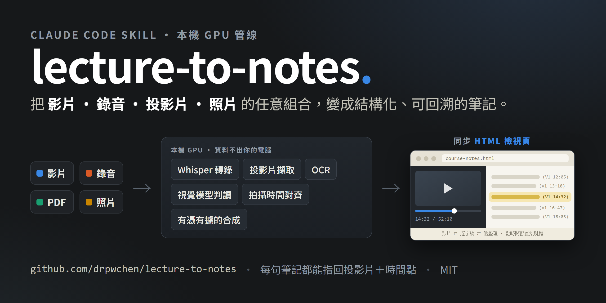
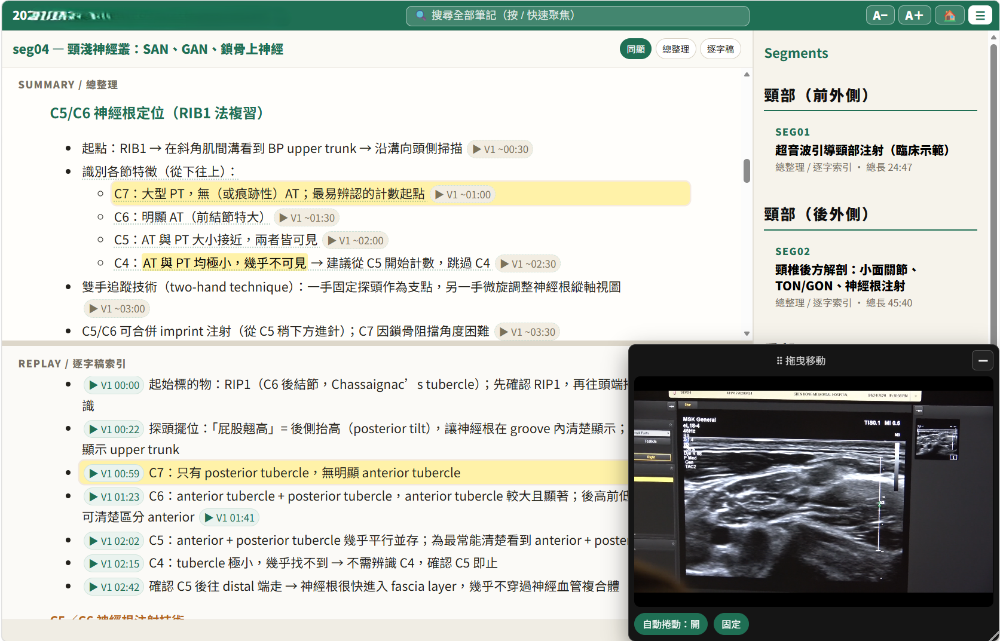
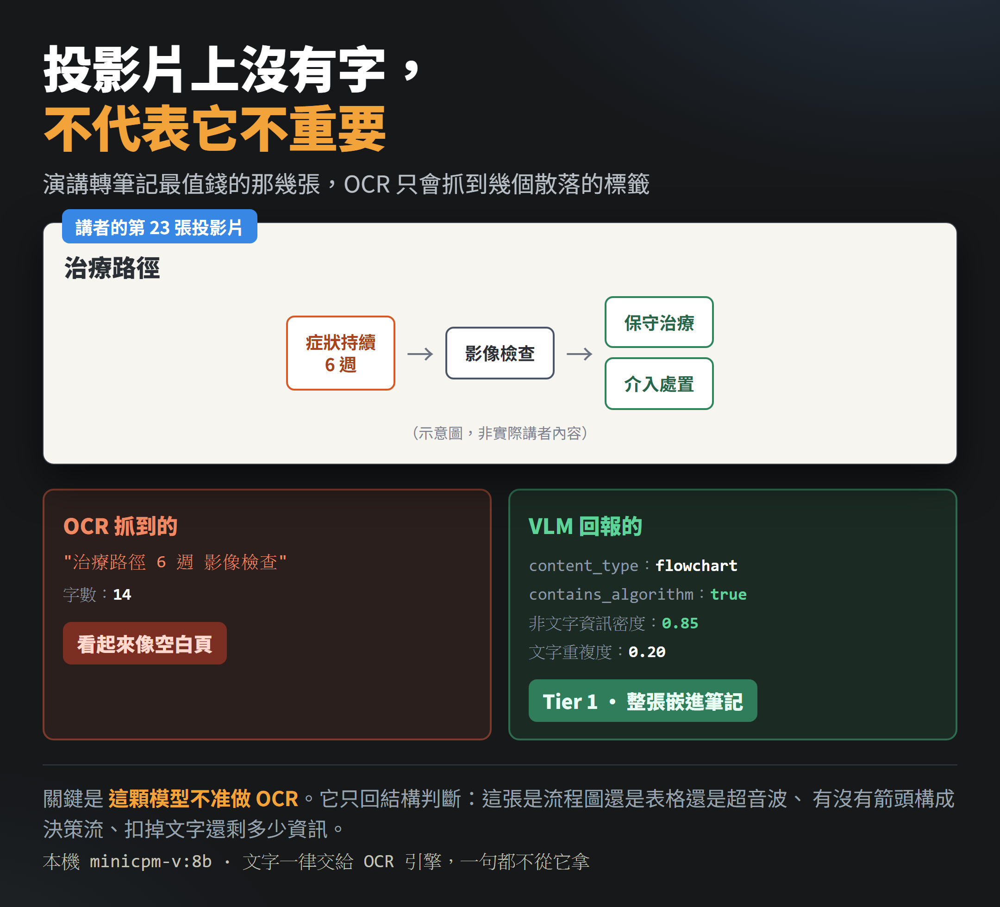

陳柏威｜lecture-to-notes：把演講錄影變成可回溯的同步網頁筆記

為什麼保存
`lecture-to-notes` 是一個很適合放進 AI 學習雷達的「專業知識轉譯」案例：它不是把影片丟給模型請它摘要，而是把演講/課程現場常見的碎片素材——錄影、錄音、PDF 投影片、手機照片——整理成可驗證、可回放、可放進個人知識庫的多層筆記。
這篇特別有參考價值，因為作者把問題定義得很精準：復健科課程、徒手治療、超音波掃描等知識往往藏在動作與影像裡，現場大家都錄影，但幾小時影片回去後很少真的完整複習。因此筆記不必被限制成「文字＋圖片」；更合理的形態是同步網頁：總整理拿來讀、逐字稿拿來驗證、影片隨時跳回原始動作。
原文重點
陳柏威醫師在部落格宣布 `lecture-to-notes` 開源，並把工具定位為「把演講影片變成真的會回去看的筆記」。依原文與 GitHub README，核心輸出包括：
- 同步 HTML 檢視頁：影片、逐字稿與總整理在同一頁，影片播到哪，對應筆記會高亮；點時間戳可直接跳回影片。
- Markdown 匯出到 Obsidian：讓課程內容進入個人筆記庫與語意搜尋流程。
- PDF 輸出：給不使用 Obsidian 或本地知識庫的人閱讀。
- 資料夾原樣輸入：影片、錄音、PDF deck、投影片截圖或照片可以混在一起，由 pipeline 判斷角色並對齊時間軸。

技術設計：重點是 traceability，不只是摘要
官方 repo 描述與 README 都強調，這套工具的目標不是「summarize a video」，而是 traceability：完成筆記裡的每個主張，都應能附著到逐字稿的某個時間點，以及當時螢幕上的投影片。
管線大致分成幾段：
- `route_inputs.py` 判斷資料夾裡每個檔案角色。
- `transcribe_video.py` 使用 Whisper / faster-whisper 做語音轉錄。
- 從影片、PDF 或圖片來源抽取/建立投影片。
- OCR 與 semantic dedup 建立 canonical slides。
- 本機視覺語言模型補充「非文字資訊」判斷。
- 將投影片與逐字稿對齊，產生可被 LLM 寫作階段引用的 evidence。
- 匯出 synced HTML viewer、Markdown、PDF 等形態。
這個設計把 LLM 放在最後的寫作層，而不是讓模型憑空看完影片後自由摘要；昂貴或敏感的前處理多在本機完成，並先產生可讀的中間證據。
圖像內容如何處理：OCR 與 VLM 分工
原文最值得保存的一段，是作者對「只有 OCR 不夠」的分析。對臨床、復健、超音波或流程圖課程來說，重要資訊常常不是文字，而是箭頭、決策流、影像、測量標記與空間關係。若只用 OCR，流程圖或超音波影像可能被誤判為「空白或不重要」。
`lecture-to-notes` 的做法是：
- OCR 負責抓投影片上真正存在的文字。
- 視覺語言模型不被允許做 OCR，避免它「讀字時編造不存在的文字」。
- VLM 只回傳結構化判斷，例如：流程圖、表格、X 光/超音波、箭頭決策流、測量數值、文字重複度、非文字資訊密度。
- 對流程圖、影像類、解剖圖、表格與統計圖設保守地板，避免因文字少而整批消失。

GitHub 與官方來源查核
GitHub API 查核顯示，`drpwchen/lecture-to-notes` 是公開 repo，建立於 2026-08-02，主要語言為 Python，license 為 MIT。查核時 GitHub metadata 顯示約 44 stars、12 forks、0 open issues；這類社群數字會變動，僅代表本次查核時間點。
與工具聲稱相符的官方/可靠來源包括：
| 元件 | 查核結果 |
|---|---|
| Whisper / faster-whisper | OpenAI Whisper repo 與 SYSTRAN faster-whisper repo 均為公開專案；faster-whisper 描述為以 CTranslate2 加速 Whisper transcription。 |
| Groq Speech-to-Text | Groq 官方文件提供 speech-to-text API，可作雲端 Whisper 替代方案；若內容機密，仍應避免上傳到雲端 STT。 |
| Obsidian | Obsidian 官方定位為本地、彈性的私人筆記 app；適合接 Markdown vault，但同步/發布等功能另有產品與條款。 |
| Claude Code Skills | Anthropic/Claude Code 文件確認 skills 可用來擴展 Claude Code 能力；repo 同時提供 skill 形態，屬於 agent 驅動管線的實作案例。 |
| MiniCPM-V | Hugging Face 上 OpenBMB MiniCPM-V 系列是可查到的多模態模型頁；實際版本、效能與授權仍需依 repo/模型卡鎖定。 |
對欒帥的可用改寫
這個 pattern 可以轉成很多 AI 學習雷達可用的工作流：
- 課程錄影整理：把工作坊錄影、講義 PDF、手機拍攝投影片變成同一份可跳轉筆記。
- 內訓知識庫：讓每場內訓輸出 synced HTML + Markdown，進入團隊知識庫。
- 醫學/工程示範課：保留「動作、影像、流程圖」這些純文字摘要容易遺失的內容。
- 私密資料優先本機處理：敏感課程或患者相關內容不宜直接上雲端 STT/LLM，應先用本機 pipeline 抽出可匿名化證據。
- 把工具做成 agent skill：讓 Claude Code 或類似 coding agent 負責重複執行與檢查，但人類保留語言、隱私與臨床判斷。
風險與限制
- 這是開源工具，不等於即裝即完美；GPU、OCR 引擎、VLM、影片編碼、PDF 解析與作業系統都可能影響結果。
- 原文提到 NVIDIA GPU 最快，8 GB VRAM 已可用；CPU fallback 可行但較慢，Mac CPU 模式作者標註為理論可行但未實測。
- 若選擇 Groq 或其他雲端 STT，機密錄音、患者資料、課程授權內容不應直接外送。
- 逐字稿錯字、投影片對齊與 VLM 圖像判斷仍需抽樣審核；「可回溯」是設計目標，不代表不需要人類校對。
- 課程影片、投影片與講者聲音涉及著作權、肖像/聲音與學員隱私；公開分享前要確認授權與去識別化。
延伸脈絡
這篇延續陳柏威先前幾個開源工作流的共同思想：讓 LLM 做語意判斷與文字整合，讓小程式負責可檢查、可重跑、可回溯的機械流程。和 `claude-paper-tools`、`paper-fetch` 一樣，真正值得學的是「把專業流程拆成可驗證中間產物」，而不只是某一段 prompt。
來源
- 原文：<https://drpwchen.com/posts/lecture-to-notes/>
- GitHub：<https://github.com/drpwchen/lecture-to-notes>
- README：<https://raw.githubusercontent.com/drpwchen/lecture-to-notes/main/README.md>
- Whisper：<https://github.com/openai/whisper>
- faster-whisper：<https://github.com/SYSTRAN/faster-whisper>
- Groq Speech-to-Text：<https://console.groq.com/docs/speech-to-text>
- Obsidian：<https://obsidian.md/>
- Claude Code Skills：<https://code.claude.com/docs/en/skills>
- MiniCPM-V：<https://huggingface.co/openbmb/MiniCPM-V-4>